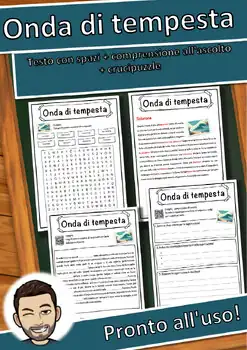
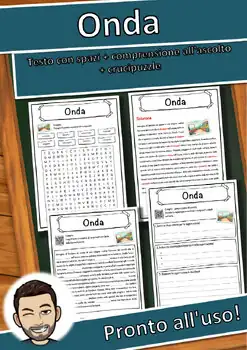
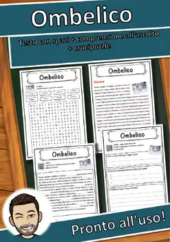
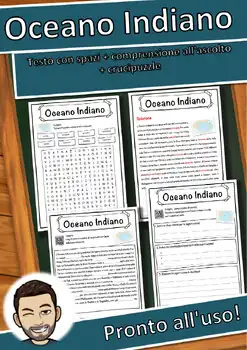
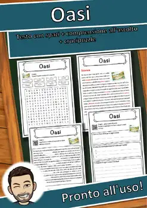
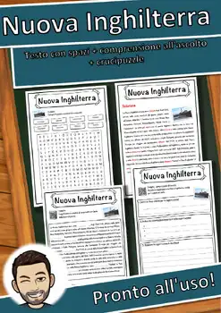
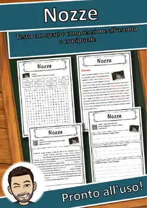
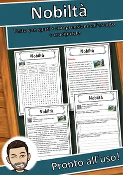
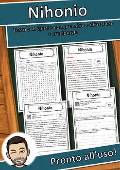

New resources
My newest resources appear here first. The list updates automatically.
48 resources

Orco – Italian Reading Comprehension Worksheet (Scheda): Cloze & Listening

Monumentos y Maravillas del Mundo: Fichas y Actividades Diferenciadas
Orange – Italian Reading Comprehension Worksheet (Scheda): Cloze & Listening
Opposizione – Italian Reading Comprehension Worksheet (Scheda didattica)
Operazione Overlord – Italian Reading Comprehension Worksheet (Scheda didattica)

Opera – Italian Reading Comprehension Worksheet (Scheda): Cloze & Listening
Ondatra zibethicus – Italian Reading Comprehension Worksheet (Scheda didattica)

Onda di tempesta – Italian Reading Comprehension Worksheet (Scheda didattica)

Onda – Italian Reading Comprehension Worksheet (Scheda): Cloze & Listening
Omosessualità – Italian Reading Comprehension Worksheet (Scheda didattica)

Omero – Italian Reading Comprehension Worksheet (Scheda): Cloze & Listening

Ombelico – Italian Reading Comprehension Worksheet (Scheda): Cloze & Listening

Olocausto – Italian Reading Comprehension Worksheet (Scheda): Cloze & Listening

Oktoberfest – Italian Reading Comprehension Worksheet (Scheda didattica)

Cookie Baking Reading Comprehension Passages | Life Skills Scavenger Hunt 5-6

Italian Gingerbread Reading Comprehension | Caccia al tesoro in italiano

Odonata – Italian Reading Comprehension Worksheet (Scheda): Cloze & Listening
Odobenus rosmarus – Italian Reading Comprehension Worksheet (Scheda didattica)

Odino – Italian Reading Comprehension Worksheet (Scheda): Cloze & Listening
Ocimum basilicum – Italian Reading Comprehension Worksheet (Scheda didattica)
Oceano Pacifico – Italian Reading Comprehension Worksheet (Scheda didattica)

Oceano Indiano – Italian Reading Comprehension Worksheet (Scheda didattica)
Oceano Atlantico – Italian Reading Comprehension Worksheet (Scheda didattica)

Oca – Italian Reading Comprehension Worksheet (Scheda): Cloze & Listening

Oboe – Italian Reading Comprehension Worksheet (Scheda): Cloze & Listening
Obesità – Italian Reading Comprehension Worksheet (Scheda): Cloze & Listening

Oasi – Italian Reading Comprehension Worksheet (Scheda): Cloze & Listening

Nutrizione – Italian Reading Comprehension Worksheet (Scheda): Cloze & Listening
Nuova Zelanda – Italian Reading Comprehension Worksheet (Scheda didattica)

Nuova Inghilterra – Italian Reading Comprehension Worksheet (Scheda didattica)

Numero primo – Italian Reading Comprehension Worksheet (Scheda didattica)

Numero – Italian Reading Comprehension Worksheet (Scheda): Cloze & Listening

Nozze – Italian Reading Comprehension Worksheet (Scheda): Cloze & Listening
Notte di San Silvestro – Italian Reading Comprehension Worksheet
Notizia – Italian Reading Comprehension Worksheet (Scheda): Cloze & Listening
Norvegia – Italian Reading Comprehension Worksheet (Scheda): Cloze & Listening

Nobiltà – Italian Reading Comprehension Worksheet (Scheda): Cloze & Listening
Nobelio – Italian Reading Comprehension Worksheet (Scheda): Cloze & Listening

Nihonio – Italian Reading Comprehension Worksheet (Scheda): Cloze & Listening
Niobio – Italian Reading Comprehension Worksheet (Scheda): Cloze & Listening

Nigeria – Italian Reading Comprehension Worksheet (Scheda): Cloze & Listening

Nido – Italian Reading Comprehension Worksheet (Scheda): Cloze & Listening

Nichel – Italian Reading Comprehension Worksheet (Scheda): Cloze & Listening

Nicaragua – Italian Reading Comprehension Worksheet (Scheda): Cloze & Listening

New York – Italian Reading Comprehension Worksheet (Scheda): Cloze & Listening
New Orleans – Italian Reading Comprehension Worksheet (Scheda didattica)

Nettunio – Italian Reading Comprehension Worksheet (Scheda): Cloze & Listening

Nervo – Italian Reading Comprehension Worksheet (Scheda): Cloze & Listening
No resources found – try a different search term or filter.